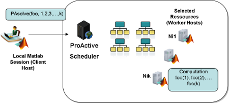

| Matlab Connector Toolbox | |
| On this page… |
|---|
|
Downloading and Installing ProActive Scheduler |
A typical deployment of ProActive Scheduler with Matlab can be seen on the diagram below :
The local Matlab session will connect to the ProActive Scheduler.
The local user will submit a function foo to call with a set of parameters.
The Scheduler will select among all its resources, those suited to the job.
Eventually a License Server Proxy called ProActive License Saver, will ensure that desired license tokens are available on each machine.
A Matlab engine will be started on each selected resource
Each foo(k) will be executed on remote engines
Results will be forwarded back to the user
ProActive License Saver is distributed separately from ProActive Scheduler, please contact http://www.activeeon.com for more information.
The License Saver address must be specified as an option while running remote tasks. See Configuring PAsolve behavior for more details.
Matlab Connector Toolbox can be downloaded from :
http://www.activeeon.com/community-downloads
The package which must be downloaded is called Matlab_Connector
After downloading the package unzip it in a directory e.g. D:\Matlab_Connector
ProActive Scheduler must also be downloaded : ProActiveScheduling-3.3.1_bin_full.zip
IMPORTANT: According to your deployment infrastructure, ProActive Scheduler must be installed on :
The host which will launch the Scheduler.
Each worker host used by the Scheduler to run matlab code.
The prerequisite for using the ProActive Scheduler is a Java Virtual Machine. On the above list, machines must have a Java Virtual Machine installed and available on the Path of either cmd.exe for Windows or sh for linux. For many ProActive features it is also necessary to define the environment variable JAVA_HOME to the installation directory of the Java Virtual Machine.
Complete configuration and installation of the ProActive Scheduler is beyond the scope of this help, for more information, refer to:
On each client host, on the matlab prompt add the path to Matlab Connector Toolbox (the folder MC/toolbox):
addpath('D:\Matlab_Connector\toolbox');
In the typical utilisation of the toolbox, no configuration of the worker host will be necessary for Matlab. When a matlab task is waiting to be executed on a scheduler worker, a script will be executed to locate automatically matlab on the host. The script will search for matlab in typical locations in both windows and linux environments and will write the matlab installations found in a configuration file which will be stored on the host. If no matlab installation is found, then the configuration file will be empty and the host will be assumed not to contain any matlab. Subsequent executions of Matlab will reuse this configuration file to decide whether a matlab task can be executed on the host or not (though it is possible to force a matlab research via execution options, see option ForceMatlabSearch in Configuring PAsolve behavior).
When the Matlab Connector creates jobs understandable by the ProActive Scheduler, it will transfer along the ProActive Matlab Connector libraries that will be used by the scheduler worker in order to create Matlab engines. Those libraries are not installed in the ProActive Scheduler by default. This transfer is done via the option UseJobClassPath. If this option is set to false, then no transfer will be done, and the librairies will have to be copied manually on the scheduler server and workers installations.
It may happen though that on some hosts, Matlab is not installed in a typical location and the automatic script doesn't manage to find it. In that case it will be necessary to write a Matlab configuration file manually.
A sample configuration file is located inside the Matlab_Connector/scheduler-plugin folder under the name MatlabWorkerConfiguration.xml
This file must be edited and put inside the addons directory of ProActive Scheduler. This must be done on ProActive Scheduler Server and on every hosts that will be used as Matlab workers for which the automatic configuration didn't work.
If the scheduler is installed in a single directory shared by all workers (via NFS for example), then only one MatlabWorkerConfiguration.xml file needs to be edited. The syntax of the file allows to create a configuration for several machine groups via wildcards that will match a machine's hostname or ipaddress, and as well several matlab installations for the same machine.
Here is an example of MatlabWorkerConfiguration.xml :
<MatSciWorkerConfiguration>
<MachineGroup hostname=".*">
<matlab>
<version>7.9</version>
<home>C:\Program Files\MATLAB\R2009b</home>
<bindir>bin\win64</bindir>
<command>matlab.exe</command>
<arch>64</command>
</matlab>
</MachineGroup>
</MatSciWorkerConfiguration>
Here is an explanation of tags used by this file:
MachineGroup: this defines the machines which are targeted by this configuration. Machines can be identified by either hostname or ip. The syntax of hostname and ip attributes follow the Regular Expression syntax.
version: The matlab version installed in numeric format.
home: Full path to matlab home directory.
bindir: relative path to the directory where to find the matlab executable. On windows, it is mandatory to use the matlab executable under bin/win32 (bin/win64) and not the executable directly in the bin directory. On linux systems on the other hand, it's mandatory to use the executable in the bin directory.
command: matlab executable name.
arch: matlab installation architecture (32 or 64).
The file supports multiple matlab configurations on the same Host (i.e. multiple matlab versions), and Matlab Connector Toolbox allows to select specific matlab versions for a given job dynamically.
If the option UseJobClassPath is set to false, the content of the directory Matlab_Connector/scheduler-plugin (not the directory itself, only the content) must be copied inside the addons directory of ProActive Scheduler and of every Matlab Worker which will be used as matlab workers.
Manually installing the librairies used by Matlab Connector inside the scheduler reduces the overhead of transferring them each time through the network.
| |
What is Matlab Connector Toolbox? | Starting And Connecting | |
© Copyright (C) 1997-2012 INRIA/University of Nice-Sophia Antipolis/ActiveEon • Terms of Use